Farklı durumlarda farklı işlemler yapmak gerekebilir. Bu durumların tespit edilmesi için koşul ifadeleri bize yardımcı olur.Koşullar birer karar yapılarıdır. Şarta bağlı bir komutu yerine getirmek istiyorsak koşul ifadelerini kullanmalıyız. Ayrıca unutmayın ki koşul ifadeleri boolean tipi verilerde çalışır. Yani bir ifade ya doğrudur ya da yanlıştır mantığı ile komutları yerine getirirler.
Şartların sağlanıp sağlanılmadığını tespit ederken standart üç ifade kullanılır. Bunlar if, else if ve else'dir
Koşul oluştururken mutlaka IF ile başlanır. Parantez içinde koşul belirtilir ve yapılacaklar kıvrımlı parantez içinde yazılır.
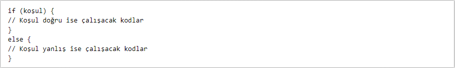if else koşulunun çalışma prensibi bu şekildedir. Şimdi basit bir örnek yapalım...
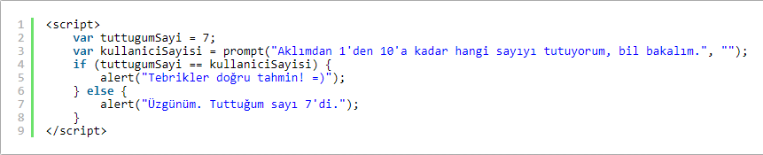tuttugumSayi adında bir değişken tanımladım ve değerini "7" verdim. Kodlarımı çalıştırdığımda aşağıdaki gibi bir pencere açılacak ve kullanıcıya sorumu soracağım. Kullanıcını vereceği cevap kullaniciSayisi adlı değişkenimin değeri olacak. Eğer tuttugumSayi ile kullanıcının gireceği sayı birbirine eşitse if kısmındaki, değilse else kısmındaki kodlar çalışacak.
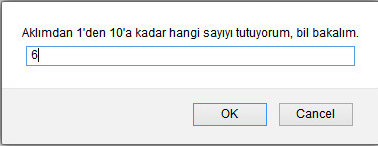Kodlarımı çalıştırdığımda karşıma bu şekilde bir pencere gelecek. Yanıt olarak 6 yazıyorum ve OK'a tıklıyorum.
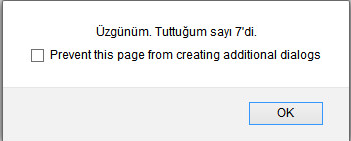Kodlarım doğru bir şekilde çalışıyor. Burada dikkatimizi çeken bir fonksiyon var. O da promt( ) metodu. Sizin de anlayacağınız gibi bu metod tarayıcıda veri girişi kutucuğunun açılmasını sağlıyor. İki parametreli. İlk parametre kutucuk bilgisi. İkincisi ise veri girişi için.
if else koşulu ile aynıdır. Tek farkı birden fazla false durumunda çalışacak koşulların eklenebilmesidir.
ELSE IF kullanmak için öncelikle IF kullanmış olmak gereklidir. Yani IF kullanmadan ELSE IF ile bir kontrol yapılamaz. "O olmadı bari bunu dene" anlamı taşır.
ELSE kullanırken parantez açılmaz ve koşul yazılmaz. ELSE, diğer tüm if ve else ifler çalışmadıysa, yani hiçbir koşul sağlanılamadıysa yapılacak şeyi belirtir./
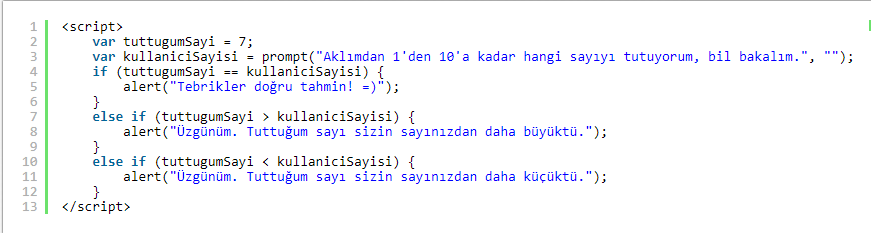Bu sefer kullanıcının girdiği sayının tuttuğumuz sayıdan büyük ya da küçük olmamasına bakıyoruz. Bunun için else if koşullarını kullanıyoruz.
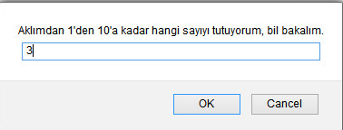Bu sefer "3" değerini giriyorum
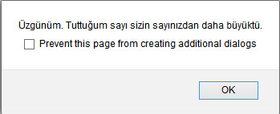Çıktım ise bu şekilde olacaktır. Kodlarım doğru bir şekilde çalışıyor.
else if ile çok benzerdir. Aralarında iki önemli fark vardır. switch koşulunda sınırlamalar bellidir. Örneğin; haftanın yedi gününden birini seçmek istiyorsak switch koşulu kullanmalıyız. İkinci fark ise switch koşulu, else if koşulundan daha hızlı tepki verir. switch koşulu içerisine yazılan herhangi bir koşul sağlandığında break deyimi ile çıktı alınırken else if'te tüm koşullar okunmaktadır.
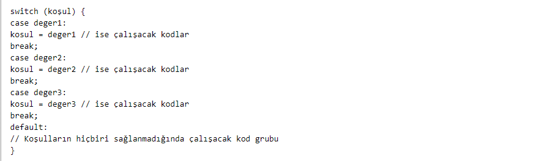Bu şekilde bir kod yapısı vardır. Şimdi bunu örnek üzerinde görelim.
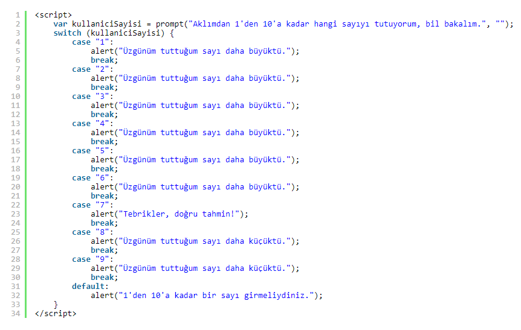Kullanıcıdan bir sayı aldım ve bu sayı bulunana kadar oluşacak durumları yazdım. Eğer "6" değerini girdiyse 6ncı case'e kadar kodlarımı okuyacak ve break deyimi ile belirttiğim uyarıyı verecek.
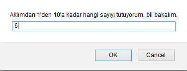Tekrar "6" değerini girdim.
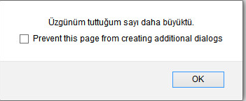Bu sefer çıktımız bu şekilde olacaktır.